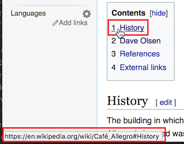

Browser History Mechanics
Browsers have built in history mechanics. You can go back and forward between pages you've been been to and you can reload the page you're on.
Exercise
Open a new tab in your browser and navigate to the Wikipedia article for Cafe Allegro in Seattle.
- Hover over the link to "Seattle" near the top of the article and look at the URL.
- Notice that the URL looked like
wikipedia.org/wiki/Seattleand does not includeCafe_Allegro, and there's no hash tag. The URL is a URL to a different page. - Click the link to "Seattle" and notice how your browser goes blank, loads another page and shows you the next article for UW.
- Click on several more links and keep an eye out to notice when the browser goes blank and totally loads a new page.
- Hold down your mouse on the back button. You'll see a drop down menu showing every page you've been on.
Holding down the back button to look at your browser history should show something like this:
Browser history mechanics are built for going back and forward between
different pages. Browsers have the back and forward buttons for users. These
actions are also available to us in JavaScript. We can write JavaScript programs
that invoke window.history.back() and window.history.forward().
Pages can be all on the same site, or on many different sites. Browsing pages on one site is like viewing different articles on Wikipedia, or viewing different movie pages on IMDB. Browsing pages on different sites is like using a search engine to look up a restaurant, looking at Yelp's website, going back to the search engine website, and looking at a restaurant's official website. The browser is still visiting different pages they're just on different sites.
It's important to specifically note what a "page" is. A page is a whole HTML file that your browser downloads and displays. You know you're navigating between two different pages when you see your browser screen go blank, then slowly load in a totally new page.
We're going into detail about what a page is in order to draw contrast to how modern web applications don't use multiple pages like they used to. Modern web applications are now often what we call Single Page Applications.
Before we get into Single Page Applications, let's talk about URL routing.
What is URL Routing?
Routing defines what content is displayed when someone visits a certain a
URL. If I go to http://github.com/ I would expect to see GitHub's homepage.
If I got to http://github.com/login I would expect to see a login page. Each
of these URLs is a route. A route pairs a URL with the content that should
be displayed for that URL. You should be able to visit a webpage, copy the URL
to a friend, and they should end up viewing the same page.
Let's look at an example of how content is routed by URLs by looking at the General Assembly homepage.
Go to https://generalassemb.ly/. Interact with the menu in the top bar on the right. You should see options for things like "On Campus," "Locations," and "About." Click on the different links to pages and notice the URLs that you end up at. Hover over the links to see their URL to save yourself from actually navigating off the page.
This table shows the path for each URL. The path of a URL is everything
after the domain name. In this case the path is everything that appears
after "https://generalassemb.ly" in the location bar of the browser. The /
path is a special path called the root. It's the homepage.
Compare the paths in the URLs and get a sense for how URLs are routed to
content. Websites URLs are general split into succinct, descriptive,
hierarchical categories. Notice how going to /locations takes you to a page
showing all campus locations, then each specific location is in a hierarchy
under that, like /locations/london and /locations/singapore.
| URL Route | Content |
|---|---|
| / | Homepage |
| /about | General Information |
| /education | Shows all local upcoming courses |
| /education/web-development-immersive | WDI course details |
| /education/user-experience-design-immersive | UX course details |
| /locations | Shows all global GA locations |
| /locations/london | Shows London-specific location information |
| /locations/singapore | Shows Singapore-specific location information |
You can see that URLs route users to content. When someone types in a URL they are ultimately shown content associated with that URL.
Have you ever tried to send someone a link to what you're looking at on Google Maps and then when they click on your link they end up looking at something completely different? That's a great example of bad URL routing. (Google Maps is actually much better about this these days.) URLs should represent the main content of the page you're looking at!
Old web sites that spread their content across multiple pages use URLs to route users to different pages. Websites can also use different URLs with hashtags to go to different content on the same page...
For example - Open a new tab in your browser and navigate back to that Wikipedia article for Cafe Allegro in Seattle.
- Hover over the "1. History" link in the Contents section 
- Look in the lower left of your browser to see the URL the link leads to
- Notice the URL looks like
wikipedia.org/wiki/Cafe_Allegro#history, specifically note the hashtag#history - Click the history link and notice how it scrolls you down in the same page. This still counts as a route - it's navigating you to a section on the page.
Modern Single Page Applications
Now, consider webpages where depending on what you click on, the actual content of the page dynamically changes. Modern web apps serve just one page and they change parts of the contents of the page, without having to reload the entire page or send users to another page.
Websites that serve up only one page and change the content of the page dynamically without reload the page are called Single Page Applications.
Open your browser and navigate to Gmail (or whichever email site you use):
- When you load Gmail, you see your inbox
- You can start instant messaging a friend in a sidebar
- You can start to compose a new email to your manager to request time off
- You can search for an email with flight information
- You can browse through more email to make sure you've talked your manager about getting time off and aren't just disappearing for a week
This all happens on one page! The page never refreshes. The chat bar with your friend never disappears as you compose an email and search through your inbox.
Gmail fits the definition of a Single Page Application. Gmail loads one page just once and that page replaces content dynamically to show you many different things. That single page changes its content dynamically without reloading or sending you to another page. It's great!
Consider the benefits of a single page application:
- It's fast. Users don't have to wait for a page to reload over and over.
- It's persistent. You can have a chat window open in one corner and keep talking to a friend as the rest of Gmail switches between showing you your inbox, an email, or email search results.